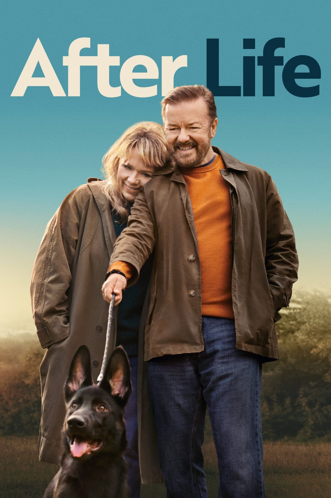
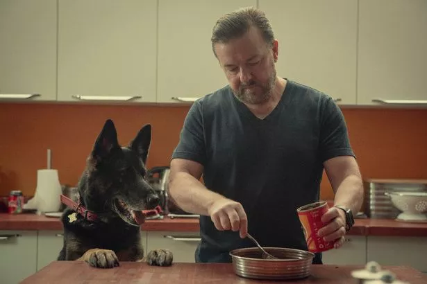
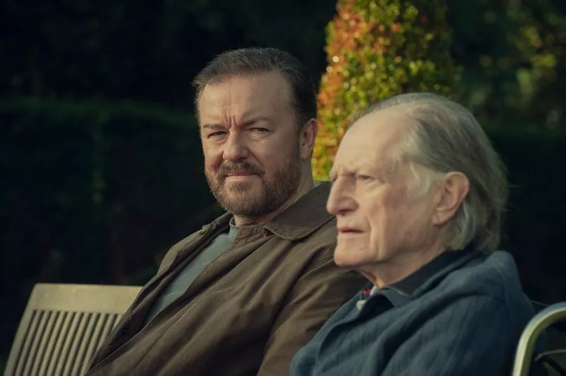

After Life



After life
Set in the fictional town of Tambury, After Life follows newspaper writer Tony Johnson, whose life is turned upside down after his wife dies from breast cancer. He contemplates suicide, but instead decides to spend his life punishing the world for his wife's death by saying and doing whatever he wants regardless of how it makes other people feel. Although he thinks of this as his "superpower", his plan is undermined as he realises he does care about a select few people. Over the course of the series, he stops trying to be awful and, despite never really moving on from his wife's death and remaining suicidal, decides true meaning in life comes from helping and being there for others.[1]
- Ricky Gervais
- Tom Basden
- Tony Way
- Diane Morgan
- Mandeep Dillon
-
Series 1: The first series received mixed to positive reviews upon its release. On Rotten Tomatoes, it has an overall approval rating of 73% with an average score of 6.6/10 based on 45 reviews.
-
Series 2: The second series received generally positive reviews from critics. On Rotten Tomatoes, it has an approval rating of 77% with an average score of 6.8/10, based on 31 reviews. The site's critical consensus reads: "Though After Life's second season struggles to affirm its existence, it's a solid entry for anyone aching for a little more contemplative gallows humor."
-
Series 3: The third series received mixed reviews. On Rotten Tomatoes, it has 62% positive reviews with an average rating of 6 from 13 critics.[19] Metacritic assigned the third series a score of 44 out of 100 based on 7 critics, indicating "mixed or average reviews".[20]